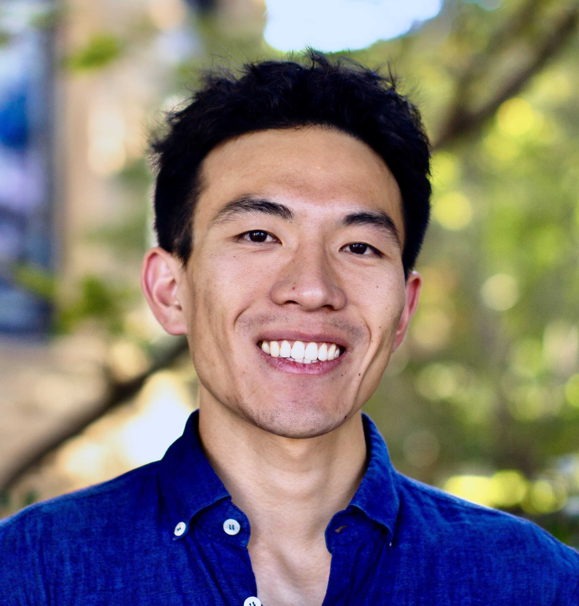

I am currently pursuing my PhD at Stanford.
In my research, I like to draw on knowledge from a diverse array of academic fields — from human-computer interaction to the social sciences — to both build and understand emerging human-AI systems and their implications for business and society.
Previously, I worked as a software engineer at Glean. And prior to this, I received my BS in Electrical Engineering from Princeton. During my time at Princeton, I had the privilege of interning abroad in two spectacular cities: Shanghai, China (as a data science intern at 小红书 - RedNote) and Hong Kong (as a machine learning research intern at ASTRI).
I was born in Taiyuan, Shanxi, China (Chinese name: 张钊), and grew up in Canada. Outside of work, I am an avid amateur tennis player and long distance runner.
You can download my CV here.